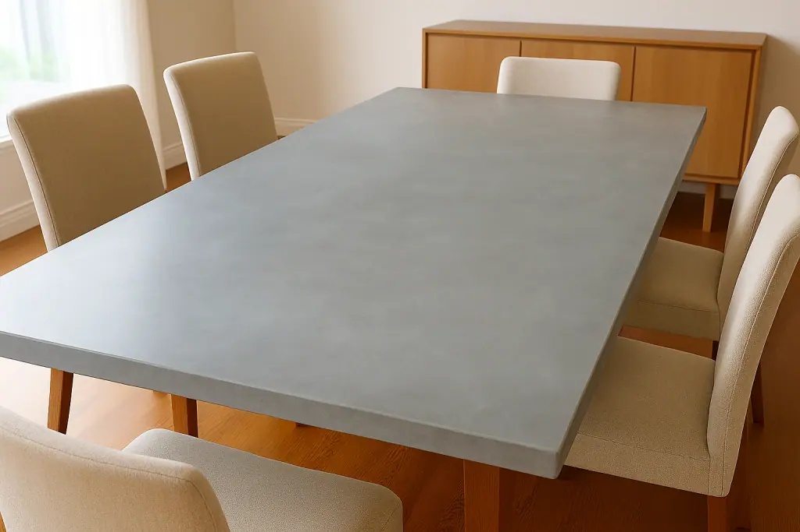
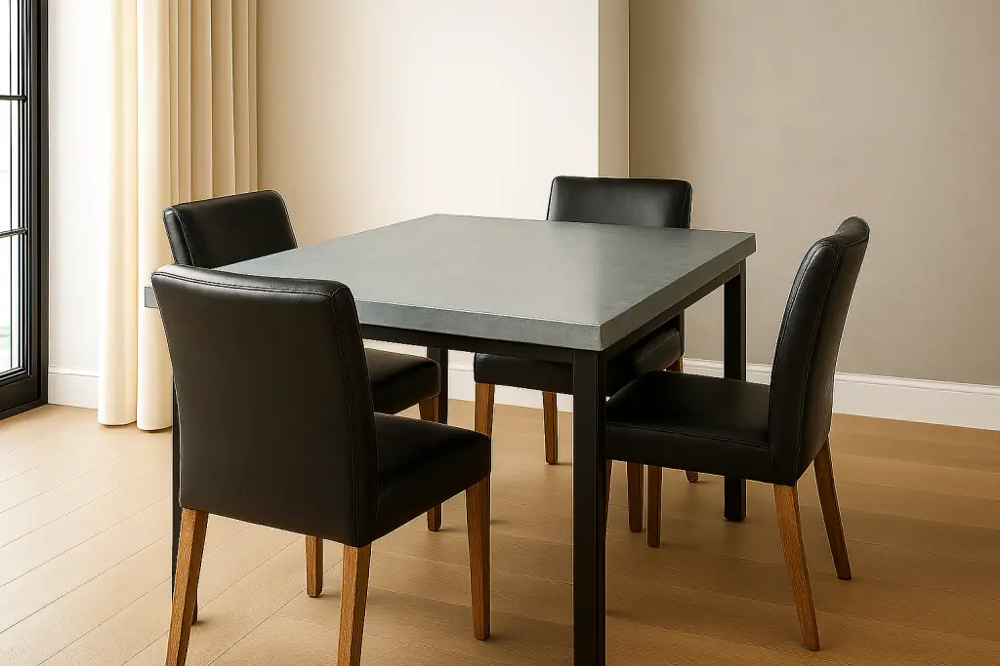

Zinc Dining Table Tops
Whether you’re updating your family dining space or designing a unique commercial interior, a zinc dining table top from Halman Thompson offers the perfect blend of style, strength, and versatility. Handmade by skilled artisans here in the UK, our zinc table tops are tailored to suit any dining setting – from private homes to bustling restaurants, cafés, or hotel dining areas.

Zinc is a versatile, elegant metal that suits a range of interiors, from rustic charm to industrial minimalism. Whether you want a modern zinc top dining table for everyday use or a statement piece for your commercial venue, our bespoke approach ensures the perfect fit and finish.
Choose from a variety of finishes to create a dining table that suits your space. Simply contact our team for a quote or to discuss your requirements.

Cut to size
At Halman Thompson, every zinc dining table top is made to order and cut to your exact dimensions. Whether you need a classic rectangular table, a round café-style surface, a square top or an entirely bespoke shape, our skilled team will bring your design to life. We can accommodate almost any request, including custom shapes, sizes, and thicknesses to suit both residential and commercial applications.
Want a unique edge profile or have a custom layout in mind? Just send us a sketch or photo and our team will work with you to bring it to life.

Ready to go
All of our zinc top dining tables are delivered fully finished and ready to install. That means no additional work or preparation is needed when it arrives – just unpack and fit into place. Our pricing includes delivery, and our typical turnaround is 4 to 6 weeks from order to dispatch.
Each piece is quality-checked and made to the highest standards, ensuring it meets our exacting standards and is ready to impress from day one. So whether you want a single dining table or a full commercial fit-out, we offer a straightforward process and a final product that speaks for itself. Get a free quotation today .
Bespoke Zinc Dining Table Tops
Every zinc dining table top is individually handcrafted by our expert team in the UK, combining traditional metalworking techniques with modern precision tools to shape, finish and age each piece with care. No two dining table tops are ever the same.
Choose from different finishes, including lightly aged or antique zinc , to create a dining table that suits your personal preference. You can select a clear lacquered finish for a smooth, sealed surface that will preserve your table’s aesthetic while adding extra protection. Or, go for an unlacquered option that will naturally age and develop a unique patina over time. Either way, your zinc dining table top will have a flawless finish, exceptional strength, and a solid construction that elevates your space with style and stability.
Why Choose a Zinc Dining Table Top?
Zinc dining table tops are the perfect combination of beauty and practicality. Zinc is naturally corrosion-resistant, hygienic, and low-maintenance – ideal for everyday use in private homes and high-traffic commercial spaces.
Whether you’re looking to buy a zinc dining table top for your kitchen or sourcing durable surfaces for a hotel, restaurant or bar, our bespoke zinc sheets are a smart, stylish solution. With a choice of finishes, shapes, and custom options, you can create a long-lasting dining table that truly reflects your style.
Plus, zinc is a sustainable, recyclable material with a lower environmental impact, which makes it an excellent choice for the eco-conscious customer.
Looking After Your Zinc Dining Table Top
Zinc is easy to care for. For lacquered finishes, just wipe clean with a soft, damp cloth and mild detergent, and avoid harsh abrasives. Unlacquered surfaces will naturally develop a patina over time, giving your table a one-of-a-kind look. This adds character, but be sure to wipe up acidic spills like lemon juice or vinegar promptly to avoid marks.
Using placemats, coasters and trivets will help protect your zinc dining table top and keep it looking its best. With minimal upkeep, your zinc top dining table will remain a timeless feature in your space for years to come!
To order your bespoke zinc dining table top, contact our team for a fast, free quote .


If you can dream it, we’ll make it.
Bars, balustrades, staircases, worktops, cladding and pieces that don’t have a name yet. Our designers and craftspeople work in brass, copper, zinc and steel, and alongside wood.